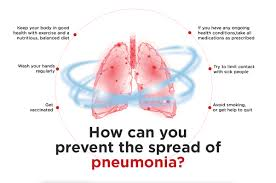

Preventing Pneumonia
Pneumonia can be very serious and even life-threatening. You can
take a few steps to try and prevent it. Vaccines can help prevent
some types of pneumonia. Good hygiene (washing your hands often),
quitting smoking, and keeping your immune system strong by getting
regular physical activity and eating healthy are other ways to lower
your risk of getting pneumonia.
Vaccines
Vaccines can help prevent pneumonia caused by pneumococcus bacteria
or the flu virus. Vaccines cannot prevent all cases of pneumonia.
However, compared to people who don't get vaccinated, those who are
vaccinated and still get pneumonia tend to have:
- Fewer serious complications
- Milder infections
- Pneumonia that doesn't last as long

Preventing Measures
Two vaccines are available to prevent infections from the
pneumococcus bacteria, the most common type of bacteria that causes
pneumonia.
-
Flu (influenza) vaccine: Your yearly flu vaccine can help
prevent pneumonia caused by the flu. The flu vaccine is usually
given in September through October, before flu season starts.
-
Hib vaccine: Haemophilus influenzae type b (Hib) is a type
of bacteria that can cause pneumonia and meningitis . The Hib
vaccine is recommended for all children under 5 years old in the
United States. The vaccine often is given to infants starting when
they are 2 months old.